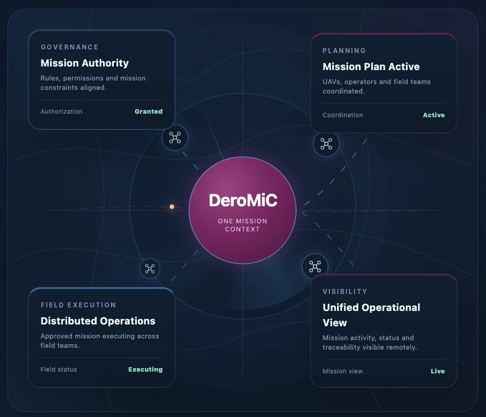

Fragmented fleets
Each vendor brings its own closed ground station and data link.
No single operating picture
Mission Infrastructure
Many aircraft, many OEMs, many locations: one coordinated operation. Govern every mission. Coordinate every operation.
Mission Infrastructure
Unified Coordinated Operational Ecosystem for every mission, every drone & every location.
DeroMiC · Indian Patent Application 202541104086 A
DeroMiC provides a unified operational framework for governing, planning, executing and overseeing UAV missions across multiple OEMs, organisations and locations, from the rules that govern a mission to the evidence it leaves behind. Not another ground station: the system that connects them all.

Four organisations, each flying UAVs from several OEMs at different locations. Toggle the view.
More missions, more applications, more OEM platforms and more locations multiply the work of keeping every aircraft and team in step.
Each vendor brings its own closed ground station and data link.
No single operating picture
Multi-UAV, multi-mission tasking done by hand across consoles.
Slow response and airspace conflict
Field teams depend on central links that degrade or drop.
Missions stall at the edge
Weak authority oversight, audit trails and role control.
Compliance and accountability risk
Bulky cases and lengthy setup.
Delayed deployment when time matters
A different controller and interface for every OEM.
More training and more switching errors
The next challenge is not drone performance. It is coordinating many drones at scale.
DeroMiC is not another ground station, fleet dashboard or UTM tool. It is the infrastructure underneath them.
The authority sets rules, permissions and constraints.
Organisations assign missions, teams, UAVs and areas.
Missions run in the field within those rules.
Mission evidence flows back for live view, replay and audit.
Open for demonstration requests from government, PSU, defence and critical-infrastructure operators.